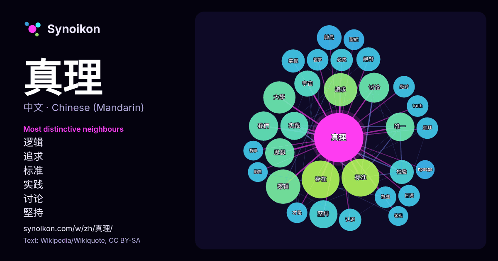

中文 · 热门词
真理
“truth” · 来自维基百科, Wikiquote 1425 次出现中其周围的词。

最具特色的邻近词
- 逻辑 28×
- 追求 25×
- 标准 23×
- 实践 20×
- 讨论 20×
- 堅持 18×
- 飯島 18×
- 检验 16×
- 思想 15×
- 絕對 14×
- 符應 14×
- 宇宙 14×
- truth 14×
- 存在 13×
- 必然 13×
- 日语 13×
- 我們 13×
- 绝对 13×
- 认识 12×
- 掌握 12×
× = 比维基百科普通文本中多出的倍数。
最常见的邻近词
- 存在 40
- 标准 40
- 逻辑 33
- 追求 31
- 大學 29
- 讨论 25
- 思想 24
- 我們 24
- 自由 24
- 唯一 23
- 堅持 22
- 实践 22
- 主义 19
- 宇宙 19
- 认为 19
- 日本 18
- 飯島 17
- 世界 16
- 检验 16
- 的是 16
上下文
- 真理通常被定义为符合事实或实在的属性。在日常语言中，真理通常被归因于旨在代表现实或与之相对应的事物，例如信念、命题和陈述句。 真理通常被认为是错误陈述的反面。 在不同的文化、哲学和宗教背景下可能有不同的解释。然而，并没有任何一个真理的定义被学者普遍接受。许多不同的真理定义一直被广泛争论，许多与真理定义相关的主题同样无法 … Wikipedia snippets · 真理
- 真理果是一位2023年3月30日開始活動的臺灣個人勢虛擬YouTuber；2024年7月達成10萬人訂閱里程碑。觀眾稱其聲音與滴妹相似，讓YouTuber阿滴對真理果中之人身分感到懷疑，後續引發話題並促成阿滴與滴妹分別在2025年和2026年的愚人節聯動直播，以及展開再睡5分鐘聯名活動。真理 Wikipedia snippets · 真理果
- 双面真理说（Dialetheism）（也称为双面真理论）是指存在双面真理（dialetheia），即命题P和~P同为真的命题。 也就是说，在同一时间和同一意义上同时是“真”和“假”的悖论被称为双面真理。 这一学说反对基于亚里士多德的无矛盾律（有时又称为矛盾律），即P∧~P必然为假的传统逻辑观。 根据格雷厄姆·普里斯特（英语 … Wikipedia snippets · 双面真理说
- 奥姆真理教（日語：オウム真理教），日本一個融合佛教、瑜伽、印度教、神智学、世界末日论等多种元素的新興宗教组织，社会普遍认为其为邪教组织，包括日本政府在内的多国政府认定其為恐怖組織。 奥姆真理教初创於1984年，成立于1987年，教主為麻原彰晃，高峰时期曾有15 Wikipedia snippets · 奥姆真理教
- 真理大學（Aletheia University），官方簡稱真大，是一所在新北市淡水區私立大學，前身為淡水工商管理專科學校，是台灣教育史上第一所學院暨大學。校名來自希臘語αλήθεια之意。國外則有哈佛和耶魯以拉丁文的同義字veritas其為校訓。 該校具有悠久的校史，可追溯至1872年3月9日加拿 Wikipedia snippets · 真理大學
- 宗教A或蘇格拉底的宗教認為真理可以在人的存在中找到，也就是說基本真理存在於人自身之中。蘇格拉底想要用辯證法和存在主義把真理從人中召喚出來，他使用兩種方式，一種是反諷，這意味透過徹底的追問來探尋真理。另一種方式是反诘法。教師不是單單地直接教導真理，要幫助人們發現存在他們之中的真理，而使本來存在人之中的知識誕生出來。 Wikipedia snippets · 索倫·克爾凱郭爾
- 真理标准大讨论，又称真理标准问题大讨论，是1978年发生在中国大陆的“实践是检验真理的唯一标准”和“两个凡是”两种执政指导思想的讨论。期间以邓小平为领导的“求是派”和以华国锋为领导的“凡是派”展开了激烈辩论，也是以经济建设为主的改革开放路线和以阶级斗争为主的文化大革命路线之间的较量。真理 Wikipedia snippets · 真理标准大讨论
- 真理紧缩理论（英語：Deflationary Theory of Truth），是哲學上對命題是非的看法：主張「真理」這個詞根本是一個沒有帶有任何意義的概念。 若是我們把「1+1=2」跟「1+1=2是對的」或「1+1=2是真理」這兩個命題相比，我們會發現除了加強語氣之外，「是對的」或是「是真理 Wikipedia snippets · 真理紧缩理论
更多词
于 2026-10-09 以默认设置预先计算（±5 个词，中等语料）。交互式图可用实时数据刷新。
界面为机器翻译，欢迎指正。